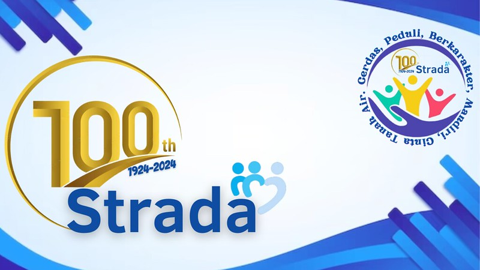

20 Agustus 2025

Perkumpulan Strada sebagai sebuah komunitas pendidikan yang unggul, peduli, dan berjiwa melayani telah berjalan selama satu abad, menemani perjalanan bangsa ini terutama pada bidang pendidikan. Dengan 75 sekolah yang tersebar di Tangerang, Banten, Jakarta, dan Bekasi, Perkumpulan Strada turut serta mewujudkan cita-cita besar bangsa Indonesia untuk mencerdaskan kehidupan bangsa.
Menjadi komunitas pendidikan dengan sekolah yang modern, berakar pada budaya, dan menghidupi Nilai-nilai Dasar Srada sampai akhir hayat merupakan tema besar pada perayaan seratus tahun ini. Puncak syukur perayaan seratus tahun diadakan pada Jumat (24/5) di Gereja Katedral Jakarta, Santa Maria Diangkat ke Surga, Jakarta pukul 07.30 s.d. 09.00 WIB yang dipimpin langsung oleh Bapak Kardinal Ignatius Suharyo, Pater Benedictus Hari Juliawan, SJ Kepala Provincial Serikat Jesus Provinsi Indonesia, Pater Josephus Ageng Marwata, SJ, Ketua Pengurus Perkumpulan Strada, Pater Odemus Bei Witono, SJ, Direktur Perkumpulan Strada, Romo Roy Zakaria, Pr, dan para Romo alumni Perkumpulan Strada. Perayaan syukur diikuti oleh sekitar 1.500 orang yang terdiri dari para relasi, tamu undangan, para pensiunan, dan semua guru/karyawan di Perkumpulan Strada.
Setelah misa syukur selesai, dilanjutkan dengan acara napak tilas dengan berjalan kaki dari gereja Katedral Jakarta menuju ke Kantor Strada Pusat di Jalan Gunung Sahari 88 Jakarta Pusat. Kegiatan napak tilas ini dilakukan untuk mengingat kembali sejarah Perkumpulan Strada. Di Gereja Katedral inilah, Tiga Serangkai Pendiri Perkumpulan Strada Pastor Johannes Josephus Hubertus Maria van Ricjkevorsel, SJ; Pastor Antonius Theodorus van Hoof, SJ; dan Pastor Josephus Wilhelmus Maria Wubbe, SJ, sepakat mendirikan Strada Vereniging pada 24 Mei 1924. Seiring berjalannya waktu kantor Perkumpulan Strada kemudian pindah ke Kantor Strada Pusat saat ini di Jalan Gunung Sahari no 88.
Sebelum perayaan puncak syukur misa, banyak kegiatan telah dilaksanakan diantaranya adalah ziarah dan doa, temu akbar, gelar budaya, penerbitan Suplemen Jejak Perkumpulan Strada, Strada Run, donor darah, aneka lomba, seminar, talkshow, dan kegiatan peduli lingkungan. Semua kegiatan dilakukan tidak lepas dari misi Perkumpulan Strada, menyelenggarakan pendidikan yang unggul bagi kaum muda agar berkembang menjadi pribadi yang cerdas, peduli, dan berkarakter. Meningkatkan kepedulian terhadap sesama, menghargai keberagaman, dan berjuang demi terpeliharanya lingkungan hidup.